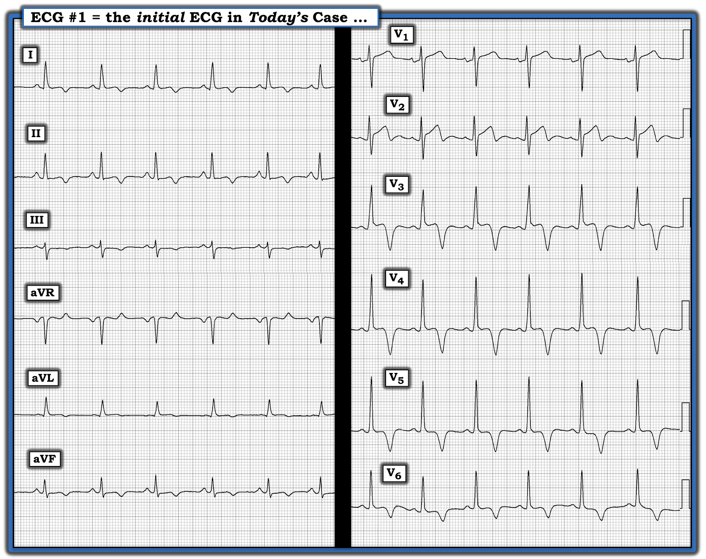

ECG Blog #329 — Biến thể bình thường ở một người trẻ tuổi?
Điện tâm đồ ở Hình-1 — được ghi ở một người trẻ tuổi không triệu chứng trong lần khám sức khoẻ trước tuyển dụng. Bệnh nhân vẫn khoẻ mạnh, không có than phiền gì về sức khoẻ. Khi thấy điện tâm đồ này — người ta đã làm siêu âm tim (Echo), và kết quả được báo cáo là bình thường.
- BẠN sẽ đọc điện tâm đồ ở Hình-1 như thế nào?
- Đây có phải là một "biến thể bình thường" (normal variant) không?


SUY NGHĨ CỦA TÔI về điện tâm đồ ở Hình-1:
Ca này được gửi cho tôi qua internet. Tôi đọc điện tâm đồ như sau:
- Nhịp là nhịp xoang với tần số ~80-85/phút. Khoảng PR và QRS bình thường. QTc cùng lắm chỉ kéo dài ở mức giới hạn. Trục mặt phẳng trán bình thường (tức là khoảng +20 độ).
- Không có lớn buồng tim (tức là Vì bệnh nhân là người trẻ tuổi, và có lẽ dưới 35 tuổi — biên độ QRS không tăng).
Về Thay đổi Q-R-S-T:
- Sóng Q — Cùng lắm chỉ có sóng q rất nhỏ ở các chuyển đạo bên cao (I,aVL) — đó là "sóng q vách bình thường".
- Tăng tiến sóng R — Có vùng chuyển tiếp sớm (R=S đã có ngay từ chuyển đạo V2).
- Thay đổi ST-sóng T — Có ST chênh lên ở các chuyển đạo V1-V3 (đạt ~1.5 mm ở chuyển đạo V2) — với nhánh xuống dốc của sóng T ở chuyển đạo V2, dẫn vào phần âm cuối của sóng T. Nhưng dấu hiệu điện tâm đồ nổi bật nhất — là sóng T đảo ngược đối xứng thấy ở nhiều chuyển đạo (và sâu đáng ngạc nhiên ở các chuyển đạo V3-V5).
NHẬN ĐỊNH: Dù người trẻ tuổi này không triệu chứng vào lúc ghi điện tâm đồ — các thay đổi ST-sóng T thấy ở Hình-1 không phù hợp với một hình ảnh "biến thể bình thường" đơn thuần.
- Có nhiều loại hình ảnh tái cực sớm và hình ảnh biến thể tái cực (Xem Bình luận của tôi ở cuối trang trong bài ngày May 23, 2022 trên Dr. Smith's ECG Blog).
- Trong số các hình ảnh biến thể thường gặp hơn có TWI (T Wave Inversion — sóng T đảo ngược) vùng trước — hoặc dưới dạng "hình ảnh sóng T thiếu niên tồn tại dai dẳng" — hoặc — đi kèm với một hình ảnh tái cực đặc trưng bởi ST chênh lên dạng vòm (coving) với TWI ở phần cuối. Vấn đề là đôi khi có thể khó khăn khi cố gắng phân biệt giữa hình ảnh lành tính với hình ảnh bệnh lý (đặc biệt là giữa HCM [bệnh cơ tim phì đại — Hypertrophic CardioMyopathy] — và ACM [bệnh cơ tim gây loạn nhịp — Arrhythmogenic CardioMyopathy]).
- Dù trước đây được gọi là ARVC (bệnh cơ tim thất phải gây loạn nhịp — Arrhythmogenic Right Ventricular Cardiomyopathy) — các biến thể cũng tổn thương LV (thất trái — Left Ventricle) hoặc cả hai thất ngày càng được mô tả nhiều hơn. Tỷ lệ mắc ACM chung là ~1/5.000 — trong đó TWI vùng trước là một tiêu chuẩn chẩn đoán chính khi tổn thương RV chiếm ưu thế — và TWI vùng bên khi tổn thương LV chiếm ưu thế (Corrado và cs. — Circulation Research 121:784-802, 2017).
- Trong số các tiêu chuẩn điện tâm đồ liên quan đến HCM — TWI vùng trước có thể gặp ở ~3% số ca (Các tiêu chuẩn điện tâm đồ khác liên quan đến HCM được mô tả trong ECG Blog #81). Nếu còn nghi ngờ khi cân nhắc khả năng HCM — siêu âm tim cho phép chẩn đoán.
Nhìn chung — điện tâm đồ có thể cung cấp manh mối để biết một hình ảnh thay đổi ST-sóng T nào đó nhiều khả năng lành tính hay bệnh lý. Dù vậy — sàng lọc bằng điện tâm đồ không phải là công cụ hoàn hảo. Dù bàn luận chi tiết về chủ đề này vượt ra ngoài phạm vi của ECG Blog này — tôi liệt kê dưới đây một số điểm khái quát có thể hữu ích khi đánh giá (D'Ascenzi và cs. — Clin Cardiol 43(8): 827-833, 2020) (Walsh, Smith và cs. — J Electrocardiog 56: 15-23, 2019) (Wilson và cs. — Br J Sports Med 46(Suppl-1), 2012).
- Rõ ràng, ở một bệnh nhân có bất kỳ dấu hiệu điện tâm đồ đáng ngờ nào — sự hiện diện của bất kỳ triệu chứng nào (tức là ngất-tiền ngất; rối loạn nhịp đáng lo ngại; đau ngực) — và/hoặc — tiền sử gia đình dương tính (tức là đột tử ở bất kỳ độ tuổi sớm nào — hoặc rối loạn nhịp ác tính) — lập tức xếp bệnh nhân đó vào nhóm nguy cơ cao hơn (cần được đánh giá đầy đủ hơn).
- TWI vùng trước khi gặp ở người không triệu chứng thì nhiều khả năng lành tính (đặc biệt ở vận động viên da đen) hơn khi có: i) ST chênh lên tại điểm J; ii) khía hoặc trát đậm tại điểm J phù hợp với tái cực sớm; iii) TWI hai pha; iv) Khi TWI vùng trước không lan quá chuyển đạo V3 (dù vận động viên da đen khoẻ mạnh đôi khi có TWI vùng trước tới tận chuyển đạo V4); và/hoặc, v) Khi có tiêu chuẩn điện thế của LVH.
- TWI vùng trước nhiều khả năng liên quan đến ACM (hoặc một nguyên nhân cấu trúc tiềm ẩn khác) hơn NẾU có: i) TWI vùng trước đi sau một đoạn ST hoặc đẳng điện hoặc chênh xuống; ii) Điện thế thấp trên điện tâm đồ; iii) Sóng Q hoặc QS; và/hoặc, iv) PVC.
- Nhìn chung — dấu hiệu TWI vùng bên (có hoặc không kèm TWI vùng dưới) — nên làm tăng nghi ngờ về một bệnh cơ tim tiềm ẩn. Xin nhấn mạnh — rằng TWI vùng bên có thể là một dấu hiệu lành tính. Nhưng ngưỡng để đánh giá thêm phải rất thấp khi thấy TWI vùng bên ở một người không triệu chứng.
Còn ca hôm nay thì sao?
Như đã nêu ở trên — điện tâm đồ trong ca hôm nay rõ ràng bất thường. Dù người trẻ tuổi này hoàn toàn không triệu chứng — hình ảnh sóng T đảo ngược sâu, lan toả (ở không dưới 8 chuyển đạo — bao gồm cả phân bố ở các chuyển đạo dưới và bên) — là vượt quá những gì có thể chờ đợi ở một hình ảnh biến thể bình thường lành tính.
- Thật tốt là bệnh nhân hôm nay đã được chỉ định siêu âm tim. Dù kết quả đọc ban đầu của siêu âm tim này là bình thường — khi xem lại kỹ hơn, người ta đã đặt câu hỏi (chưa có câu trả lời dứt khoát) về một bất thường nào đó ở vùng mỏm.
- LƯU Ý #1: Siêu âm tim bình thường không nhất thiết loại trừ được một bệnh cơ tim tiềm ẩn. Khi mức độ nghi ngờ bệnh lý tiềm ẩn cao hơn — MRI tim (chụp cộng hưởng từ — Magnetic Resonance Imaging) chắc chắn có chỉ định, với các kỹ thuật đặc biệt bao gồm tiêm thuốc tương phản để tối ưu hoá việc phát hiện ACM và HCM mỏm (Xem Corrado và cs. — Eur Heart J 41(14):1414-1429, 2020 — để biết thêm về đánh giá ACM bằng MRI).
- Kết quả MRI tim trong ca hôm nay đang chờ.
- LƯU Ý #2: Ở một tỷ lệ nhất định các ca — TWI bất thường trên điện tâm đồ có thể xuất hiện trước bằng chứng giải phẫu của một bệnh cơ tim tiềm ẩn đến vài năm. Do đó — có thể cần đánh giá nhiều lần liên tiếp theo thời gian ở một số bệnh nhân chọn lọc có nguy cơ cao hơn (và/hoặc những người có dấu hiệu điện tâm đồ đặc biệt bất thường).
- Các thành phần khác của đánh giá đầy đủ gồm khai thác tiền sử gia đình cẩn thận — và đôi khi nghiệm pháp gắng sức và theo dõi Holter 24 giờ.
- Việc dùng xét nghiệm di truyền (có cân nhắc bệnh kênh ion có tính gia đình) vượt ra ngoài phạm vi của bài blog này.
- T.B. (P.S.): Dù hình dạng ST-sóng T ở chuyển đạo V2 trên điện tâm đồ giống một "sóng T kiểu Wellens" — ca hôm nay không phù hợp với hội chứng Wellens! Đó là vì một bệnh sử đặc hiệu (tức là có đau ngực trước đó và đã hết hoàn toàn vào lúc ghi điện tâm đồ) — là thiết yếu để chẩn đoán hội chứng Wellens. Thay vào đó — ca hôm nay là một người trẻ tuổi không triệu chứng đến khám sức khoẻ trước tuyển dụng. Điều quan trọng cần nhớ là các bệnh cảnh lâm sàng khác (tức là nhồi máu đã hoàn tất, phình thất trái, LVH, biến thể tái cực, v.v.) có thể biểu hiện thay đổi ST-sóng T tương tự như trong hội chứng Wellens thật sự. (Xem ECG Blog #320 — để biết thêm hội chứng Wellens là gì và không phải là gì).
Một số ví dụ về các hình ảnh tái cực:
- ECG Blog #60 — ví dụ về đoạn ST dạng vòm kèm TWI lan toả trong lần khám thể lực trước khi tham gia thi đấu ở một cầu thủ bóng bầu dục 20 tuổi khoẻ mạnh.
- ECG Blog #254 — ví dụ về ST chênh lên dạng vòm ở vùng trước với phần cuối sóng T âm, giống ST-sóng T "kiểu Wellens".
- Bình luận của tôi ở cuối trang trong bài ngày September 15, 2020 trên Dr. Smith's ECG Blog (ở một người trung niên có ST chênh lên và sóng T nhọn, hoá ra là một biến thể tái cực).
=======================================
LỜI CẢM ƠN: Xin cảm ơn Mohamed Wafiq Shoukry (từ Kuwait) đã gửi ca bệnh và bản ghi này.
=======================================
Các bài ECG Blog liên quan đến ca hôm nay:
- ECG Blog #205 — Ôn lại Cách tiếp cận hệ thống của tôi trong đọc điện tâm đồ 12 chuyển đạo.